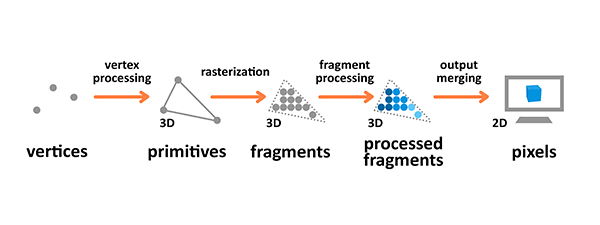
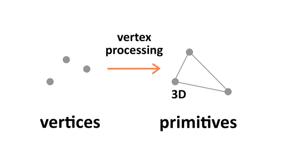
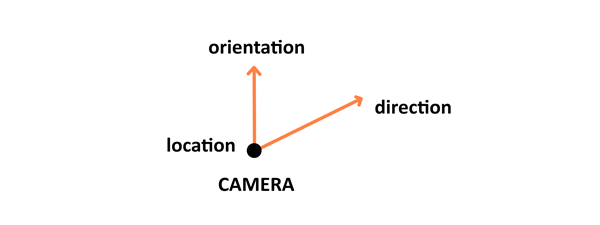
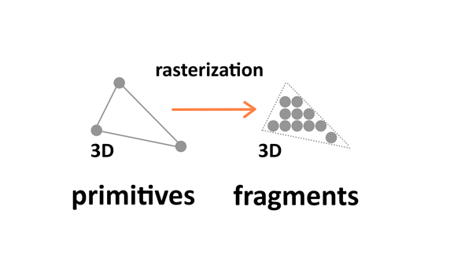
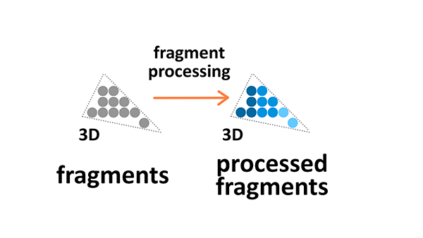
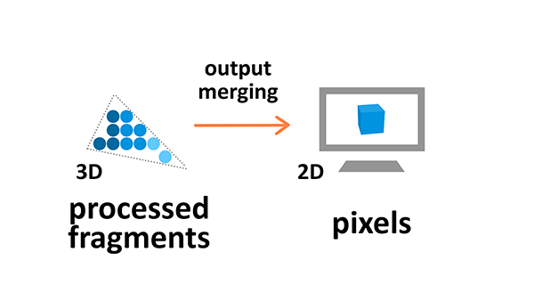

This article explains all of the basic theory that's useful to know when you are getting started working with 3D.
3D essentially is all about representations of shapes in a 3D space, with a coordinate system used to calculate their position.
WebGL uses the right-hand coordinate system — the x axis points to the right, the y axis points up, and the z axis points out of the screen, as seen in the above diagram.
Different types of objects are built using vertices. A Vertex is a point in space having its own 3D position in the coordinate system and usually some additional information that defines it. Every vertex is described by these attributes:
x, y, z).0.0 to 1.0).You can build geometry using this information — here is an example of a cube:

A face of the given shape is a plane between vertices. For example, a cube has 8 different vertices (points in space) and 6 different faces, each constructed out of 4 vertices. A normal defines which way the face is directed in. Also, by connecting the points we're creating the edges of the cube. The geometry is built from a vertex and the face, while material is a texture, which uses a color or an image. If we connect the geometry with the material we will get a mesh.
The rendering pipeline is the process by which images are prepared and output onto the screen. The graphics rendering pipeline takes the 3D objects built from primitives described using vertices, applies processing, calculates the fragments and renders them on the 2D screen as pixels.

Terminology used in the diagram above is as follows:
Vertex and fragment processing are programmable — you can write your own shaders that manipulate the output.
Vertex processing is about combining the information about individual vertices into primitives and setting their coordinates in the 3D space for the viewer to see. It's like taking a photo of the given scenery you have prepared — you have to place the objects first, configure the camera, and then take the shot.

There are four stages to this processing: the first one involves arranging the objects in the world, and is called model transformation. Then there's view transformation which takes care of positioning and setting the orientation of the camera in the 3D space. The camera has three parameters — location, direction, and orientation — which have to be defined for the newly created scene.

Projection transformation (also called perspective transformation) then defines the camera settings. It sets up what can be seen by the camera — the configuration includes field of view, aspect ratio and optional near and far planes. read the Camera paragraph in the Three.js article to learn about those.

The last step is viewport transformation, which involves outputting everything for the next step in the rendering pipeline.
Rasterization converts primitives (which are connected vertices) to a set of fragments.

Those fragments — which are 3D projections of the 2D pixels — are aligned to the pixel grid, so eventually they can be printed out as pixels on a 2D screen display during the output merging stage.
Fragment processing focuses on textures and lighting — it calculates final colors based on the given parameters.

Textures are 2D images used in the 3D space to make the objects look better and more realistic. Textures are combined from single texture elements called texels the same way picture elements are combined from pixels. Applying textures onto objects during the fragment processing stage of the rendering pipeline allows us to adjust it by wrapping and filtering it if necessary.
Texture wrapping allows us to repeat the 2D image around the 3D object. Texture filtering is applied when the original resolution or the texture image is different from the displayed fragment — it will be minified or magnified accordingly.
The colors we see on the screen is a result of the light source interacting with the surface colors of the object's material. Light might be absorbed or reflected. The standard Phong Lighting Model implemented in WebGL has four basic types of lighting:
During the output manipulation stage all the fragments of the primitives from the 3D space are transformed into a 2D grid of pixels that are then printed out on the screen display.

During output merging some processing is also applied to ignore information that is not needed — for example the parameters of objects that are outside of the screen or behind other objects, and thus not visible, are not calculated.
Now you know the basic theory behind 3D manipulation. If you want to move on to practice and see some demos in action, follow up with the tutorials below:
Go ahead and create some cool cutting-edge 3D experiments yourself!